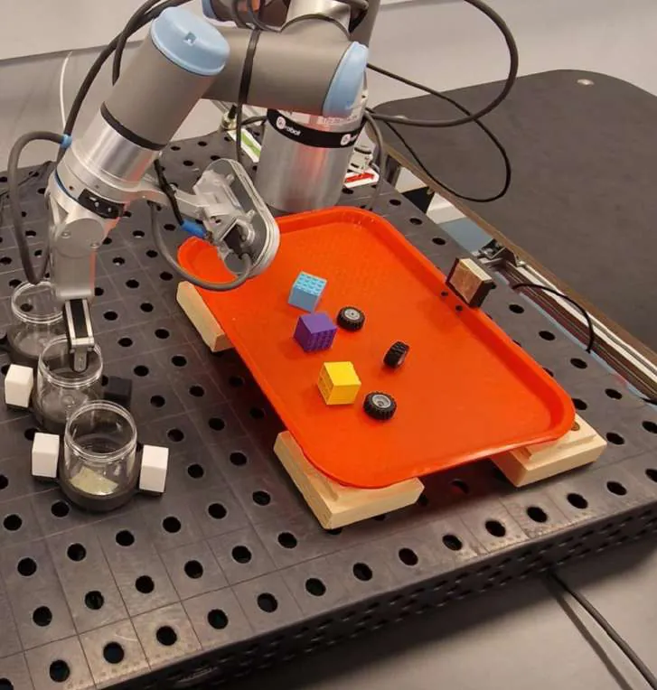
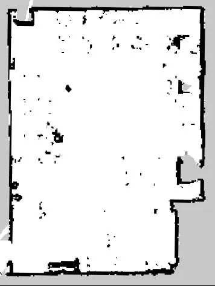
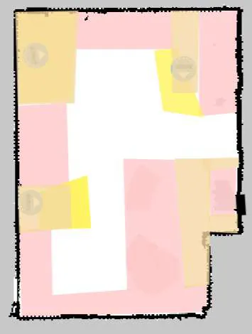
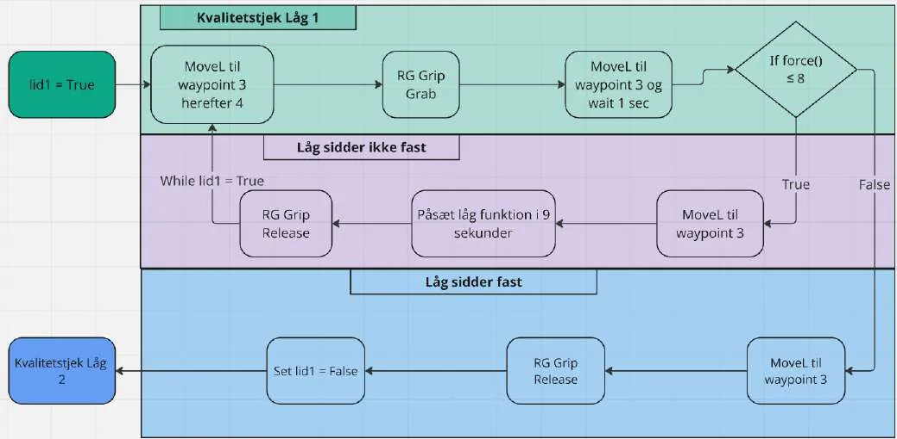
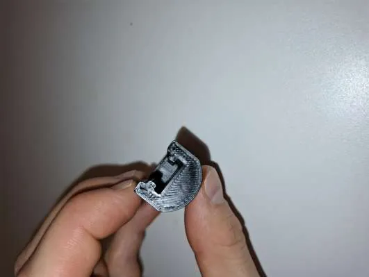
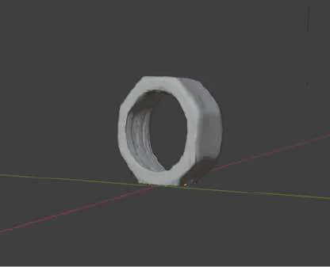
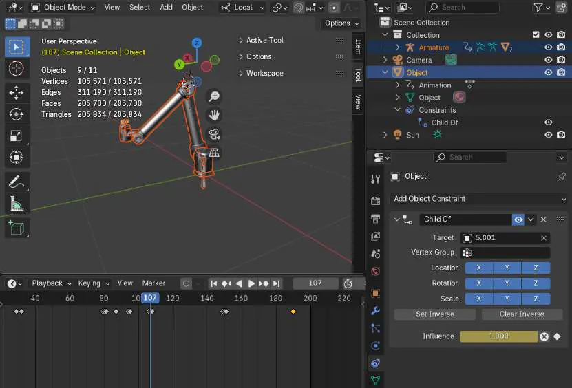

← Alle projekterArk 05 af 08
Kursus 62112 Industri 4.0 i praksis · DTU · hold på 5
Laboratorium med AMR, cobot og smart fabrik
Praktiske forsøg med maskinerne i en moderne fabrik: en mobil robot, der transporterer dele, to cobotarme, der samler og kontrollerer dem, en smart transportbåndslinje og en AR-oplæringsvejledning.
- Sammenhæng
- Kursus 62112, DTU
- Hold
- 5 personer
- Min rolle
- MiR-missioner, kraftbaseret kvalitetskontrol, grundlæggende maskinsyn
- Værktøjer
- MiR100, UR10, OnRobot Eyes, Festo MPS 403, HoloLens 2, Blender
- 5 min 35 s
- fuld cyklus med cobot + AMR
- 21,2 s
- gennemsnitlig transportbåndscyklus (kørsel 1)
- 6 min 45 s
- AR-vejledning, ekstern testperson
Hvad vi gjorde
- Mobil robot (MiR100). Rensede det scannede fabrikskort, definerede zoner og programmerede missioner med try/catch-løkker, så robotten kan komme videre ved blokerede ruter, samt automatisk docking til opladning.
- Cobotcelle (to UR10-robotter). Robotterne monterer låg på bøtter og kontrollerer dem med kraftmåling: løft låget nogle få centimeter, vent et sekund, og aflæs kraften. En bøtte, der løftes med låget, godkendes; ellers presses låget på én gang til og kasseres, hvis det stadig ikke består kontrollen. Den fulde cyklus, inklusive MiR-transporten, tog 5 min 35 s ved bevidst lave hastigheder for sikker fejlfinding.
- Maskinsyn. Farve- og formgenkendelse med OnRobot Eyes til at gribe dele fra skiftende positioner på pallen.
- Smart transportbånd (Festo MPS 403). Kasser med RFID-tags, farvesortering, låg. Vi registrerede tidsstempler for hvert trin og behandlede dem i Excel/VBA: en gennemsnitlig cyklustid på 21,2 og 22,3 s i to kørsler.
- AR-vejledning (HoloLens 2). Et forløb i Dynamics 365 Guides med en 3D-scannet del og en robotarm animeret i Blender. En ekstern testperson gennemførte det på ca. 6 min 45 s uden hjælp.
- 3D-print. Printede griberfingre på en Prusa MK4 og sammenlignede FDM, SLA og SLS.


Min del
Hvad jeg lavede i gruppen på fem
- Udarbejdede zonedefinitionerne for MiR100 og missionsstrukturerne med fejlhåndtering.
- Opsatte cobottens kvalitetskontroltrin med kraftmåling.
- Arbejdede med grundlæggende maskinsyn: kameraplacering, hvad der påvirker registreringen, og maskinsynets rolle i Industri 4.0.











